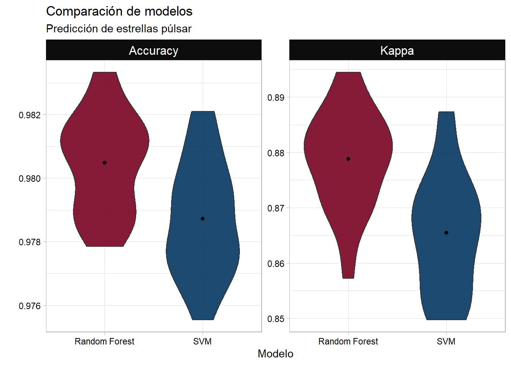

Algoritmos de machine learning con caret y R. Entrenamiento de modelos random forest y support vector machine en problemas de clasificación supervisada.
Descripción: a través de emisiones de radio detectables en nuestro planeta, los científicos perfilan los púlsares en función de múltiples métricas provenientes del análisis de señales; el ruido causado por interferencia de radiofrecuencia dificulta la labor de los investigadores. Se propone generar un sistema automático que proporcione alta precisión para detectar estrellas púlsar. (ver más información)
Tipo de aprendizaje: Aprendizaje Supervisado - Clasificación Binaria.
# Cargando biblioteca caretlibrary(caret)# Semilla para reproducir resutladosset.seed(073)# Particionesidx<-createDataPartition(y =df_pulsar$pulsar, times =1, p =0.7, list =FALSE)df_train<-df_pulsar[idx, ]df_test<-df_pulsar[-idx, ]
Proporción de la variable respuesta en train y test:
En este caso particular se usa el método ranger que permite ajustar tres hiperparámetros:
mtry: número de predictores seleccionados.
splitrule: criterio de división. En problemas de clasificación se suele utilizar Gini, aunque hay más disponibles. Ver documentación de ranger.
min.node.size: número mínimo de observaciones en cada nodo. Por defecto para problemas de clasificación es 1.
Random Forest
Algoritmo
Código
# Algoritmo de random forestmodelo_rf<-train(pulsar~., data =df_train, method ="ranger")# Guardando modelosaveRDS(object =modelo_rf, file ="models_fit/RandomForest.rds")
Resultados:
Código
# Cargando modelomod_rf<-readRDS("models_fit/RandomForest.rds")# Resultados del modelomod_rf
Random Forest
12530 samples
8 predictor
2 classes: '0', '1'
No pre-processing
Resampling: Bootstrapped (25 reps)
Summary of sample sizes: 12530, 12530, 12530, 12530, 12530, 12530, ...
Resampling results across tuning parameters:
mtry splitrule Accuracy Kappa
2 gini 0.9801226 0.8758954
2 extratrees 0.9794474 0.8705685
5 gini 0.9801169 0.8762727
5 extratrees 0.9803843 0.8777407
8 gini 0.9795793 0.8731006
8 extratrees 0.9804887 0.8788098
Tuning parameter 'min.node.size' was held constant at a value of 1
Accuracy was used to select the optimal model using the largest value.
The final values used for the model were mtry = 8, splitrule = extratrees
and min.node.size = 1.
Desempeño
Matriz de confusión en test:
Código
# Predicciones en nuevos datospredict_rf<-predict(object =mod_rf, newdata =df_test)# Matriz de confuciónnconfusionMatrix(predict_rf, df_test$pulsar, positive ="1")
Confusion Matrix and Statistics
Reference
Prediction 0 1
0 4840 84
1 37 407
Accuracy : 0.9775
95% CI : (0.9731, 0.9813)
No Information Rate : 0.9085
P-Value [Acc > NIR] : < 2.2e-16
Kappa : 0.8583
Mcnemar's Test P-Value : 2.892e-05
Sensitivity : 0.82892
Specificity : 0.99241
Pos Pred Value : 0.91667
Neg Pred Value : 0.98294
Prevalence : 0.09147
Detection Rate : 0.07582
Detection Prevalence : 0.08271
Balanced Accuracy : 0.91067
'Positive' Class : 1
SVM
Se utiliza el método svmRadial que está contenido en la biblioteca kernlab.
La configuración está por defecto.
Este algoritmo permite ajustar hiperparámetros sigma y C (costo).
# Cargando modelomod_svmR<-readRDS("models_fit/SVM_Radial.rds")# Resultados del modelomod_svmR
Support Vector Machines with Radial Basis Function Kernel
12530 samples
8 predictor
2 classes: '0', '1'
No pre-processing
Resampling: Bootstrapped (25 reps)
Summary of sample sizes: 12530, 12530, 12530, 12530, 12530, 12530, ...
Resampling results across tuning parameters:
C Accuracy Kappa
0.25 0.9785764 0.8629191
0.50 0.9785329 0.8635606
1.00 0.9787235 0.8654589
Tuning parameter 'sigma' was held constant at a value of 0.4893064
Accuracy was used to select the optimal model using the largest value.
The final values used for the model were sigma = 0.4893064 and C = 1.
Confusion Matrix and Statistics
Reference
Prediction 0 1
0 4852 95
1 25 396
Accuracy : 0.9776
95% CI : (0.9733, 0.9814)
No Information Rate : 0.9085
P-Value [Acc > NIR] : < 2.2e-16
Kappa : 0.8563
Mcnemar's Test P-Value : 2.999e-10
Sensitivity : 0.80652
Specificity : 0.99487
Pos Pred Value : 0.94062
Neg Pred Value : 0.98080
Prevalence : 0.09147
Detection Rate : 0.07377
Detection Prevalence : 0.07843
Balanced Accuracy : 0.90070
'Positive' Class : 1
Comparación de modelos
Código
mod_svmR$resample%>%select(-Resample)%>%mutate(Modelo ="SVM")%>%bind_rows(mod_rf$resample)%>%select(-Resample)%>%replace_na(list(Modelo ="Random Forest"))%>%gather(key ="Medida", value ="Valor", -Modelo)%>%ggplot(data =., aes(x =Modelo, y =Valor, fill =Modelo))+facet_wrap(~Medida, scales ="free", ncol =2)+geom_violin(alpha =0.9)+stat_summary(fun =mean, geom ="point", pch =19)+labs(y ="", title ="Comparación de modelos"", subtitle ="Predicción de estrellas púlsar")"+ +scale_fill_manual(values =c("#790222", "#033660"))+mi_temagg+theme(legend.position ="none")

Correr el código
---title: "Algoritmos de ML con caret en R (1)"author: "Edimer (Sidereus)"date: "03-23-2020"description: "Algoritmos de machine learning con caret y R. Entrenamiento de modelos random forest y support vector machine en problemas de clasificación supervisada."categories: - R - caret - MLimage: "img2.png "lang: escss: estilo.cssformat: html: toc: true toc-title: "Tabla de contenido" smooth-scroll: true code-fold: true df-print: paged toc-location: left number-depth: 4 code-copy: true highlight-style: github code-tools: source: true code-link: true ---```{r setup, include=FALSE}knitr::opts_chunk$set(echo =TRUE,warning =FALSE,message =FALSE,fig.align ="center")# Learn more about creating blogs with Distill at:# https://rstudio.github.io/distill/blog.html# Bibliotecaslibrary(tidyverse)library(caret)library(RColorBrewer)library(data.table)mi_temagg <-theme_light() +theme(axis.text.x =element_text(color ="black"),axis.text.y =element_text(color ="black"),strip.background =element_rect(fill ="gray50", color ="black"),strip.text =element_text(color ="black", size =12))```# Datos- [Fuente: predicción de estrellas púlsar.](https://www.kaggle.com/pavanraj159/predicting-a-pulsar-star#pulsar_stars.csv)- [¿Qué es un púlsar?](https://es.wikipedia.org/wiki/P%C3%BAlsar)# Problema- **Descripción:** a través de emisiones de radio detectables en nuestro planeta, los científicos perfilan los púlsares en función de múltiples métricas provenientes del análisis de señales; el ruido causado por interferencia de radiofrecuencia dificulta la labor de los investigadores. Se propone generar un sistema automático que proporcione alta precisión para detectar estrellas **púlsar**. ([ver más información](https://archive.ics.uci.edu/ml/datasets/HTRU2))- **Tipo de aprendizaje:** Aprendizaje Supervisado - Clasificación Binaria.- Algoritmos: - [Random Forest](https://es.wikipedia.org/wiki/Random_forest) - [Support Vector Machine-SVM](https://es.wikipedia.org/wiki/M%C3%A1quinas_de_vectores_de_soporte)# Importando datos```{r}# Cargando biblioteca data.tablelibrary(data.table)# Nombres de variablesnombres <-c("media_pefil", "de_perfil", "curtosis_perfil", "asimet_perfil", "media_dmsnr","de_dmsnr", "curtosis_dmsnr", "asimet_dmsnr", "pulsar")df_pulsar <-fread("data/pulsar_stars.csv", sep =",", col.names = nombres,colClasses =c(rep("numeric", 8), "factor"))head(df_pulsar)```# Exploración- **Definiento tema de `ggplot2` para gráficos:**```{r}# Cargando biblioteca tidyverselibrary(tidyverse)# Tema personalizado para gráficosmi_temagg <-theme_light() +theme(axis.text.x =element_text(color ="black"),axis.text.y =element_text(color ="black"),strip.background =element_rect(fill ="gray5"),strip.text =element_text(color ="white", size =12))```## Variable respuesta```{r}df_pulsar %>%group_by(pulsar) %>%count() %>%ggplot(data = ., aes(x = pulsar, y = n)) +geom_col(color ="black", fill ="#033660") +geom_label(aes(label = n)) +labs(x ="¿Púlsar?", title ="Distribución de variable respuesta",subtitle ="0=No\n1=Sí") + mi_temagg```## Distribuciones```{r, fig.width=8}df_pulsar %>%gather(key ="variable", value ="valor", -pulsar) %>%ggplot(data = ., aes(x = valor, fill = pulsar)) +facet_wrap(~variable, scales ="free", ncol =4) +geom_density(alpha =0.9) +scale_x_log10() +labs(x ="", y ="Densidad", title ="Escala logarítmica",fill ="¿Púlsar?") +scale_fill_manual(values =c("#790222", "#033660")) + mi_temagg```## Correlaciones```{r, fig.height=6}# Cargando biblioteca corrplotlibrary(corrplot)df_pulsar %>%mutate_if(is.numeric, scale) %>%select_if(is.numeric) %>%cor(method ="spearman") %>%corrplot(method ="pie", type ="upper", order ="hclust", diag =FALSE,tl.srt =35, tl.col ="black", tl.cex =1)```# Train y Test- La partición se hace 70 y 30%, para entrenamiento (`df_train`) y prueba (`df_test`), respectivamente.- El argumento `list = FALSE` en la función `createDataPartition`, permite que el objeto sea devuelto en forma de `vector`.- [Documentación de biblioteca `caret`.](https://topepo.github.io/caret/index.html)```{r}# Cargando biblioteca caretlibrary(caret)# Semilla para reproducir resutladosset.seed(073)# Particionesidx <-createDataPartition(y = df_pulsar$pulsar, times =1, p =0.7, list =FALSE)df_train <- df_pulsar[idx, ]df_test <- df_pulsar[-idx, ]```- **Proporción de la variable respuesta en train y test:**```{r}ggpubr::ggarrange( df_train %>%group_by(pulsar) %>%count() %>%ungroup() %>%mutate(prop = n/sum(n)) %>%ggplot(data = ., aes(x = pulsar, y = prop)) +geom_col(color ="black", fill ="#033660") +geom_label(aes(label =round(prop, digits =2))) +labs(x ="¿Púlsar?", title ="Distribución en train",subtitle ="0=No\n1=Sí") + mi_temagg, df_test %>%group_by(pulsar) %>%count() %>%ungroup() %>%mutate(prop = n/sum(n)) %>%ggplot(data = ., aes(x = pulsar, y = prop)) +geom_col(color ="black", fill ="#033660") +geom_label(aes(label =round(prop, digits =2))) +labs(x ="¿Púlsar?", title ="Distribución en test",subtitle ="0=No\n1=Sí") + mi_temagg,ncol =2)```# Modelos- Se utiliza el método `ranger`.- Los argumentos se han dejado como están por defecto.- [Referencia de algoritmo random forest con caret.](http://topepo.github.io/caret/train-models-by-tag.html#random-forest)- En este caso particular se usa el método `ranger` que permite ajustar tres hiperparámetros: - `mtry`: número de predictores seleccionados. - `splitrule`: criterio de división. En problemas de clasificación se suele utilizar `Gini`, aunque hay más disponibles. [Ver documentación de `ranger`.](https://cran.r-project.org/web/packages/ranger/ranger.pdf) - `min.node.size`: número mínimo de observaciones en cada nodo. Por defecto para problemas de clasificación es 1.## Random Forest### Algoritmo```{r, eval=FALSE}# Algoritmo de random forestmodelo_rf <-train(pulsar ~ ., data = df_train, method ="ranger")# Guardando modelosaveRDS(object = modelo_rf, file ="models_fit/RandomForest.rds")```- **Resultados:**```{r}# Cargando modelomod_rf <-readRDS("models_fit/RandomForest.rds")# Resultados del modelomod_rf```### Desempeño- **Matriz de confusión en test:**```{r}# Predicciones en nuevos datospredict_rf <-predict(object = mod_rf, newdata = df_test)# Matriz de confuciónconfusionMatrix(predict_rf, df_test$pulsar, positive ="1")```## SVM- Se utiliza el método `svmRadial` que está contenido en la biblioteca `kernlab`.- La configuración está por defecto.- Este algoritmo permite ajustar hiperparámetros `sigma` y `C` (costo).- [Documentación `kernlab`.](https://cran.r-project.org/web/packages/kernlab/kernlab.pdf)### Algoritmo```{r, eval = FALSE}# Algoritmomodelo_svmR <-train(pulsar ~ ., data = df_train, method ="svmRadial")# Guardando modelosaveRDS(object = modelo_svmR, file ="models_fit/SVM_Radial.rds")```- **Resultados:**```{r}# Cargando modelomod_svmR <-readRDS("models_fit/SVM_Radial.rds")# Resultados del modelomod_svmR```### Desempeño```{r}predict_svmR <-predict(object = mod_svmR, newdata = df_test)confusionMatrix(predict_svmR, df_test$pulsar, positive ="1")```## Comparación de modelos```{r}mod_svmR$resample %>%select(-Resample) %>%mutate(Modelo ="SVM") %>%bind_rows(mod_rf$resample) %>%select(-Resample) %>%replace_na(list(Modelo ="Random Forest")) %>%gather(key ="Medida", value ="Valor", -Modelo) %>%ggplot(data = ., aes(x = Modelo, y = Valor, fill = Modelo)) +facet_wrap(~Medida, scales ="free", ncol =2) +geom_violin(alpha =0.9) +stat_summary(fun = mean, geom ="point", pch =19) +labs(y ="", title ="Comparación de modelos",subtitle ="Predicción de estrellas púlsar") +scale_fill_manual(values =c("#790222", "#033660")) + mi_temagg +theme(legend.position ="none")```